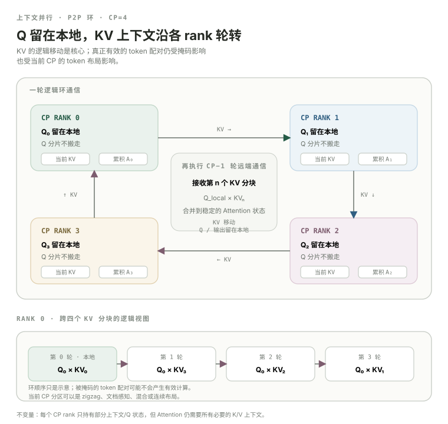

Context Parallel：当 sequence 长到一张 GPU 连 Attention activation 都放不下。
Sequence Parallel 已经在 LayerNorm、dropout、residual 等区域把 tokens 分着放，但 Attention 仍然需要跨 token 的全局 context。Context Parallel 再往前一步：让不同 ranks 负责不同 sequence partitions，连 Attention 本身也跨 partitions 并行；至于远端 context 怎样交换，并不只有 ring 一种实现。
- 解释 CP 和 SP 都切 sequence，但为什么不是同一个东西。
- 理解 CP 下每个 rank 只保存/计算自己的一部分 query tokens。
- 解释为什么 local Q 仍然需要整个可见 context 的 K/V 信息。
- 理解
cp_comm_type='p2p'时 ring KV exchange 的基本思路。 - 知道当前 Megatron 还支持
all_gather、a2a、a2a+p2p，不能把 CP 定义成 ring。 - 知道 current MCore 对 causal attention 常用 zigzag partition 做负载均衡，不能把“CP rank = 单个连续 token 区间”当成实现不变量。
- 知道 GQA/MQA 为什么能直接降低以 K/V 为主的数据交换量。
- 正确计算 dense Transformer grid 的 TP/PP/CP/DP rank 关系，并把 EP 当成另一套 expert grid 来理解。
sequence 从 4K 变 32K，不只是“多算八倍 tokens”。
训练长上下文时，大量 activation 会随 sequence length 增长；Attention 还要求每个 query 根据 mask 规则访问其它 tokens 的 K/V。即便 FlashAttention 避免显式物化巨大 S×S score matrix，Q/K/V 与其它 activation 的保存、计算和通信仍然随 S 增长。
一种粗暴办法是继续增大 TP，但这会把 Linear GEMM 也切得越来越小，通信占比可能上升。CP 的想法是：既然真正变长的是 sequence，就沿 sequence/context 维增加并行度。
先用“每 rank 一部分 tokens”建立数学模型，再看 current MCore 为什么常把它做成 zigzag。
最简单的教学图可以把 8K sequence 直接切成两个连续 4K chunks。但对 causal attention 来说，越靠后的 query 通常能看到越长的 prefix；如果简单连续切，后半段 rank 的 attention 工作会更重。当前 MCore 的常见 per-sequence 路径会先切成 2 × CP 个等长 chunks，再做 zigzag 分配。
early + late tokensmiddle partitions也就是说，CP 的 invariant 是“每个 rank 只负责 sequence 的一部分”，不是“每个 rank 永远拿一个连续区间”。具体 partition 还会随 packed sequence、hybrid CP、contiguous CP 等路径变化。
CP 的难点不是 split 本身。难点是怎样让 local Q 获得正确的 global-context K/V，同时不把每张卡重新撑成“持有完整 sequence 的单卡 Attention”。
get_batch_on_this_cp_rank() 会在 per-sequence zigzag、per-document zigzag、hybrid CP 与 contiguous CP 等路径间分派；per-sequence zigzag 的源码例子明确写着 CP=2 时 (chunk0, chunk3) → GPU0、(chunk1, chunk2) → GPU1。每张 GPU 保留自己的 Q partition，但要通过 CP 通信获得其它 context partitions 的 K/V 信息。
~ [S/CP, heads, d]visible context KV
stream / gather / redistribute最容易理解的教学版是先 all-gather K/V，再算 attention。它很直观，但会让每个 rank 临时拿到更大的 K/V view。另一类做法是流式交换 K/V；还有 Ulysses 风格的 A2A 重排。这些是不同通信算法，都可以服务同一个 CP 数学目标。
cp_comm_type='p2p'：Q 留在本地，KV 沿 ring 流动；每收到一块，就把它并入本地 attention 结果。
下面画的是逻辑数据流：四个 CP ranks 各自保留 local Q 与 attention accumulator，只把当前 K/V partition 传给下一个 rank。Rank 0 的例子里，KV₀、KV₃、KV₂、KV₁ 依次到达；实际哪些 token pair 需要计算、每轮工作量多少，仍由 causal/window mask 与具体 CP partition 决定。

TransformerConfig.cp_comm_type 对 p2p 的源码说明仍是：在 ring topology 中交换 KV chunks，P2P 为异步通信，并可与 attention compute overlap。P2P ring 的系统价值之一，是给“边收下一块、边算当前块”留下空间。
当前 Megatron cp_comm_type='p2p' 配置说明明确写着 P2P ring 是异步的，并可与 attention compute overlap。“可 overlap”不等于“实际已经完全隐藏”；仍要看 CP degree、KV bytes、互连带宽与 attention kernel 时长。
主要收益是：可沿 context partition 的 activation 不必在每张 GPU 完整复制。
实际峰值还包含 K/V exchange buffers、attention backend workspace、TP/PP/DP 状态等，所以不能把“整个 GPU 显存”简单除以 CP。
K/V heads 越少，每个 token 的 K/V representation 越窄。
02.2 已经学过 GQA：很多 Q heads 共享较少的 KV heads。对于以 K/V exchange 为主的 CP 模式，这会减少每个 context partition 需要搬的 K/V bytes；具体收益还受 attention backend、TP/CP layout 和通信算法影响。
这条线以后会直接通向 vLLM KV Connector。训练 CP 和推理 KV transfer 的协议不同，但都必须先从 KV tensor 的 shape 计算真实 bytes。
TP=4、CP=2 时，同一个 dense Transformer grid 可以看成 4 个 TP coordinates × 2 个 context partitions。
用 8 GPU 的 rank-group 直觉图：GPU0–3 处在一个 CP coordinate，GPU4–7 处在另一个；对应 CP peers 是相同 TP coordinate 的 ranks。这里的 partition A/B 只是 rank-grid 标签，不表示真实 token 一定连续：
坐标感很重要：dense TP 分 hidden/features；CP 分 context。一个 rank 会同时有 TP coordinate、CP coordinate、PP stage 和 DP replica 身份。
parallel_state.py 的实际 dense rank construction 仍先计算 model_size = TP × PP × CP × gtp_remat，再令 DP = world_size / model_size。当前 Megatron 的 cp_comm_type 支持四类主要选择。
TransformerConfig.cp_comm_type 当前明确列出 p2p、all_gather、a2a、a2a+p2p，而且可以按 layer 指定列表。学习时先掌握数学 invariant：local Q 必须获得正确的远端 context 信息；通信算法是实现选择。
最稳的区别：Attention 本身是否保持 context partition。
先算 dense rank grid，再单独理解 MoE expert grid；不要把所有缩写机械相乘。
--seq-length 32768
--tensor-model-parallel-size 4
--context-parallel-size 4
--cp-comm-type p2p
# dense-grid intuition:
# local context capacity ≈ 32768 / 4 = 8192 tokens
# current rank construction: model_size = TP × PP × CP × gtp_remat
# DP = world_size / model_size这里有一个值得主动防错的地方：当前 Parallelism Strategies Guide 的 overview 仍给出过一条简化的 Total GPUs = TP × PP × CP × EP × DP 口诀；但当前 parallel_state.py 的真实 rank construction 先用 dense TP × PP × CP（再考虑 GTP remat）确定 model size 与 DP，再另外构造 expert tensor/model/data groups。对于读源码和排 rank，这门课以实际 group construction 为准。
读多维并行最安全的方法不是背乘法口诀。打开 parallel_state.py，分别找 dense rank generator 和 expert rank generator，然后问“这个 rank 在哪套 grid 里、每个轴的 size 是多少”。
确认你已经能把“数学目标”“token partition”和“通信算法”分开。
cp_comm_type 还支持 all_gather、a2a、a2a+p2p。CP 定义的是 context partition 与 attention 的跨-partition 正确性，不是某个固定 collective。TP×PP×CP×EP×DP 不适合当成源码级 rank-construction 定律？parallel_state.py 先用 dense TP×PP×CP（以及可选 GTP remat）计算 model size 和 DP，再单独构造 expert tensor/model/data groups。overview 乘法只能当高层直觉，不能替代真实 group construction。